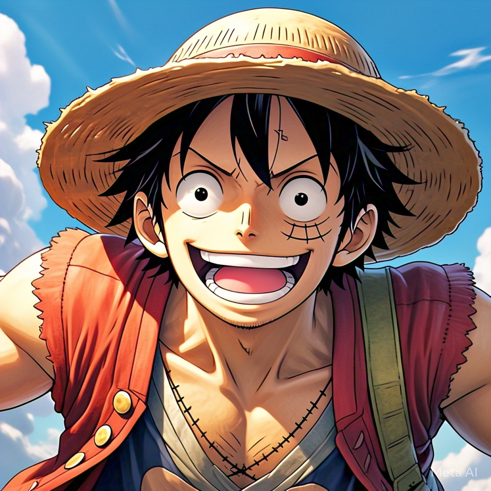
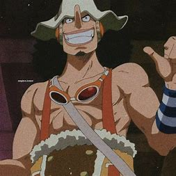
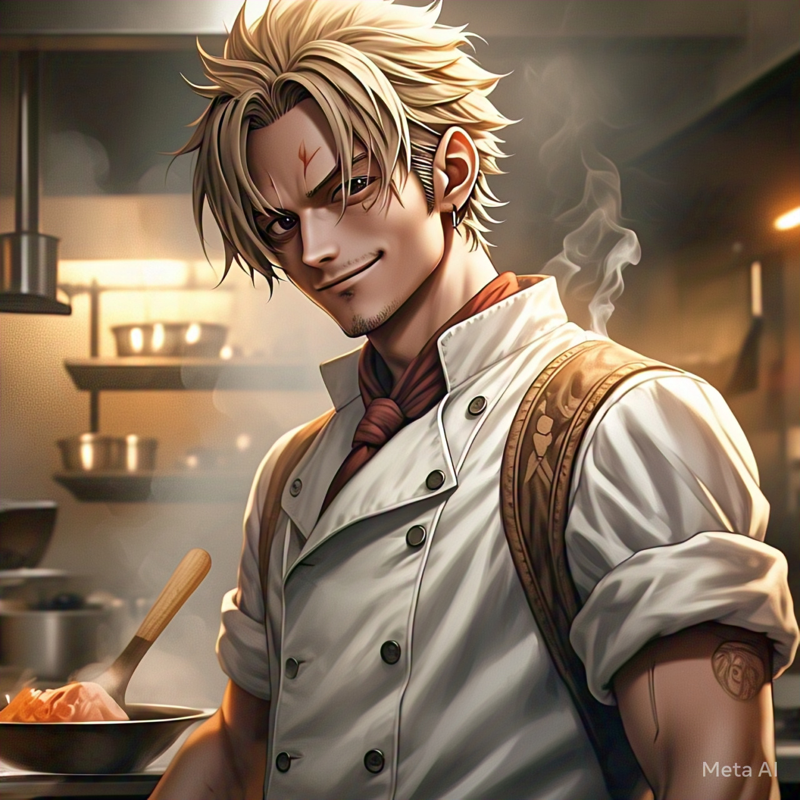

Monkey D. Luffy
El capitán de los Piratas del Sombrero de Paja.
Detalles

Roronoa Zoro
Espadachín de la tripulación, usa tres espadas.
Detalles

Nami
Navegante y cartógrafa de los Piratas del Sombrero de Paja.
Detalles

Usopp
Francotirador y mentiroso profesional.
Detalles

Sanji
Cocinero de la tripulación y maestro del combate con piernas.
Detalles

Tony Tony Chopper
Médico de la tripulación y reno con poderes de la Fruta Hito Hito.
Detalles

Nico Robin
Arqueóloga y experta en la historia del Siglo Vacío.
Detalles

Franky
Carpintero de los Piratas del Sombrero de Paja y cyborg.
Detalles

Brook
Músico y espadachín esquelético de la tripulación.
Detalles

Jinbe
Timonel de la tripulación y maestro del Karate Gyojin.
Detalles